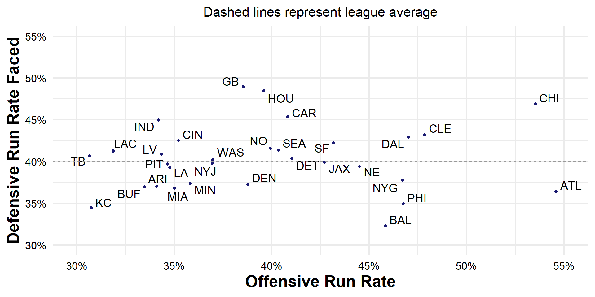
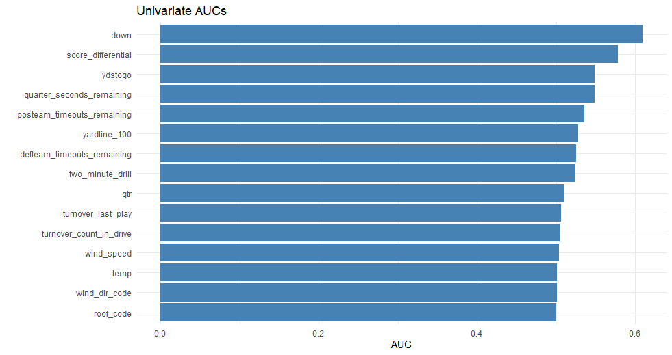

Run or Pass?
Verity and Cale
Predicting Offensive Play Calls in the NFL
- Accurately anticipating a run or passing play is vital for defensive play-calling
- The game is won through strategy, both on the field and the sidelines
- Our goal is to build a model that predicts the likelihood of a run play given pre-snap context
Data
- Play-by-play and tracking data from the first 9 weeks of the 2022 season
- So far we have only used the basic plays data
- Key variables: quarter, down, distance, game clock, yard line, etc.
- Created features:
- Situational run rate
- Yardline relative to the offense
- Score differential from possession team’s POV
Down and distance are major tells of what an offense will do
Run proportions vary widely for different teams
Modeling
- We first created a basic model using only info a coach can have before the play
- Quarter, down, distance, time left, opposing team, score differential, yard line
- Offensive and defensive run proportions, situational run proportions
- Model trained on weeks 1-5, tested on weeks 6-9
- Accuracy: 72.1%
- AUC: 0.8085
- How is this useful?
- Variables are known before sending players on the field
- Can be built upon
What’s Next?
- Including offensive personnel
- Win probabilities
- Tracking data
- Tells us who is on the field and where they are
- Formations, linemen splits, motions
- Performance of players in the game before that play
- We have the basic model, now we can build on it
Animated tracking play
A taste of more stuff we’ve worked on
Univariate AUCs for LogRegression1
Univariate AUCs for LogRegression1
Lowest vs Highest Accuracy Games

Lowest vs Highest Accuracy Games
Most and Least Predictable Teams

Most and Least Predictable Teams
Related Work
| Year | Study | Key Angle |
|---|---|---|
| 2024 | Chung – Computer Vision + ML to Predict Offensive Play Calls in College Football | End-to-end vision pipeline (CNN + LSTM) on NCAA broadcast film |
| 2023 | Varadarajan – Trench Chess | Qualitative look at pre-snap “mind games”; highlights alignment & motion cues |
| 2022 | Fernandes et al. – Predicting Plays in the NFL | Gradient-boosted trees on down/distance/score; ~70 % accuracy baseline |
| 2022 | Lee, Chen & Lakshman – Predicting Offensive Play Types in the NFL | Combines personnel, formation & weather; logistic vs. XGBoost comparison |
| 2021 | Ota – Play Type Prediction & Tendency Analysis | Hidden-Markov model captures drive-level momentum |
| 2020 | Otting – Predicting Play Calls with HMMs | First large-scale HMM on play-by-play; stresses sequential dependencies |
| 2019 | Teich et al. – NFL Play Prediction | Random forest vs. neural net; shows feature engineering > model complexity |
| 2018 | Sung – NFL Play Prediction Using Computer Vision | Early attempt to extract formations from broadcast film |
| — | Can Next Gen Stats Help Predict Pass Plays? (NFL Ops blog) | NGS tracking boosts pass-prediction accuracy by ~5 pp |
Takeaways for our model:
- Tabular features alone plateau ≈ 70-75 % accuracy → need tracking/CV features.
- Sequential models (HMM, LSTM) add useful context.
- Vision work proves formations are extractable—aligns with our next-step roadmap.